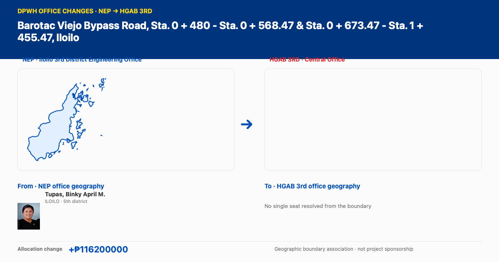

Office change · Barotac Viejo Bypass Road, Sta. 0 + 480 - Sta. 0 + 568.47 & Sta. 0 + 673.47 - Sta. 1 + 455.47, Iloilo

Geographic representatives associated with mapped DEO boundaries
Tupas, Binky April M.From · NEP office · ILOILO · 5th districtHouse profile ↗
NEP Iloilo 3rd District Engineering Office → HGAB 3rd Central Office · allocation change +₱116,200,000. Geographic representatives are associated with mapped DEO boundaries, not project sponsorship. These geographic associations indicate mapped boundary coverage, not project sponsorship.
Open the DPWH office changes explorer ↗